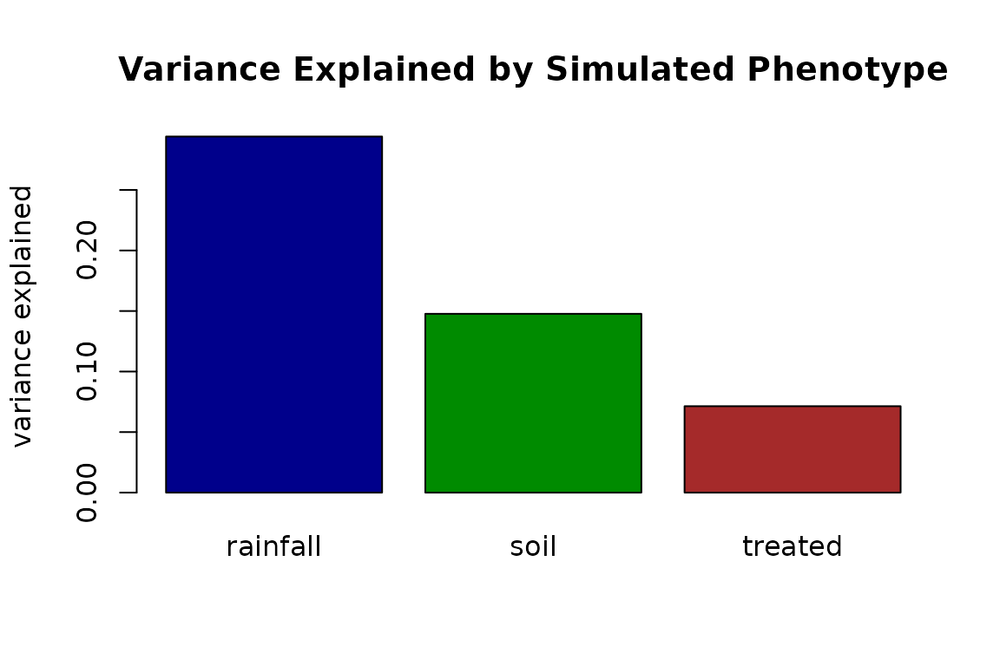
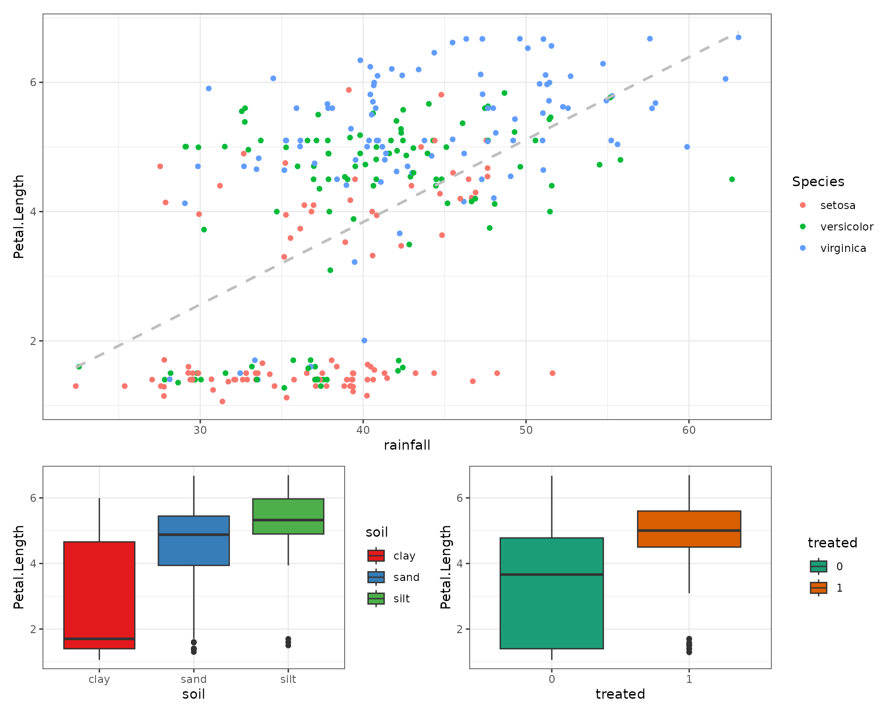

Injecting phenotypes
phenotypes.RmdInject a synthetic phenotype
Beyond reproducing the input, simulate_dataset() can
append new synthetic columns – phenotypes –
each correlated with a chosen subset of features at a user-defined
effect size. This is useful for generating teaching datasets, power
analyses, or method benchmarks with a known ground-truth signal.
Each entry of inject is a named list describing the
trait. The effect controls how strongly it correlates with
its on targets, either as a standardized
mean_shift or a target r_squared on the latent
scale. Three phenotype types are supported:
"quantitative", "binary", and
"categorical".
sim <- simulate_dataset(
iris, n = 300, seed = 42, verbose = FALSE,
inject = list(
# 1. continuous trait, modest effect on every feature
rainfall = list(
type = "quantitative", mean = 40, sd = 8,
effect = list(kind = "r_squared", min_r2 = 0.35, on = "all")
),
# 2. binary trait (case/control), stronger effect on the petals
treated = list(
type = "binary", prob = 0.40,
effect = list(kind = "r_squared", min_r2 = 0.3,
on = c("Petal.Length", "Petal.Width"))
),
# 3. ordinal categorical trait: clay -> sand -> silt gradient
soil = list(
type = "categorical",
levels = c("clay", "sand", "silt"), probs = c(0.5, 0.3, 0.2),
effect = list(kind = "r_squared", min_r2 = 0.3,
on = c("Petal.Length", "Petal.Width"))
)
)
)
#> Warning in .attach_phenotypes(data, types, inject, verbose): phenotype
#> 'rainfall': dropped 1 categorical target(s) -- not supported as effect targets
#> in v1
#> Warning in .generate_phenotype(s, X_target, target_corr): phenotype effect
#> infeasible: requested |corr| mean 0.592, clipped to 0.590
head(sim$data, 6) |>
kable(digits = 2, caption = "iris + three injected phenotypes") |>
kable_styling(full_width = FALSE, font_size = 11)| Sepal.Length | Sepal.Width | Petal.Length | Petal.Width | Species | rainfall | treated | soil |
|---|---|---|---|---|---|---|---|
| 6.0 | 3.8 | 4.60 | 1.3 | setosa | 45.52 | 0 | clay |
| 4.8 | 3.0 | 1.37 | 0.2 | setosa | 31.72 | 0 | clay |
| 5.6 | 2.8 | 1.50 | 1.5 | setosa | 32.82 | 0 | clay |
| 6.3 | 3.0 | 4.50 | 1.6 | versicolor | 40.81 | 1 | sand |
| 5.0 | 3.0 | 1.50 | 0.3 | setosa | 33.40 | 0 | clay |
| 5.0 | 3.0 | 1.70 | 1.4 | setosa | 38.07 | 0 | silt |
Variance Explained by Simulated Phenotype
fit = lm(Petal.Length ~ rainfall + soil + treated, data = sim$data)
a = anova(fit)
eta_squared = a[, 2] / sum(a[,2])
names(eta_squared) = rownames(a)
barplot(eta_squared[-4], col = c("blue4","green4","brown"),
main = "Variance Explained by Simulated Phenotype",
ylab = "variance explained")
Rainfall Correlations
p1 = sim$data |> ggplot(aes(x = rainfall, y = Petal.Length)) +
geom_point( aes(color = Species) ) +
# geom_smooth(method = "lm", aes(color = Species)) +
geom_smooth(method = "lm", formula = 'y ~ x',
color = "grey", se = FALSE,
linetype = "dashed") +
theme_bw()
p2 = sim$data |> ggplot(aes(x = soil, y = Petal.Length, fill = soil)) +
geom_boxplot() +
scale_fill_brewer(palette = "Set1") +
theme_bw()
p3 = sim$data |>
mutate(treated = as.factor(treated)) |>
ggplot(aes(x = treated, y = Petal.Length, fill = treated)) +
geom_boxplot() +
scale_fill_brewer(palette = "Dark2") +
theme_bw()
p1 / (p2 | p3) + plot_layout(heights = c(2,1))
What was realised vs requested
Every injected trait is reproducible bookkeeping in
sim$inject_truth:
data.frame(
phenotype = names(sim$inject_truth),
realised_cor = vapply(sim$inject_truth,
function(it) it$mean_abs_real_cor, numeric(1)),
expected_sim_cor = vapply(sim$inject_truth,
function(it) it$expected_sim_cor, numeric(1)),
thresholding = vapply(sim$inject_truth,
function(it) it$binary_sim_factor, numeric(1))
) |>
kable(digits = 3, caption = "Injected phenotype: realised vs expected effect") |>
kable_styling(full_width = FALSE, font_size = 11)| phenotype | realised_cor | expected_sim_cor | thresholding | |
|---|---|---|---|---|
| rainfall | rainfall | 0.560 | 0.590 | 1.000 |
| treated | treated | 0.419 | 0.432 | 0.789 |
| soil | soil | 0.475 | 0.548 | 1.000 |
Binary phenotypes: thresholded-normal fidelity
A binary trait is a continuous latent thresholded to 0/1.
synthetica splices that generating latent
into the copula, so the designed correlation is captured exactly – only
a single, predictable thresholding factor
phi(c) / sqrt(p(1-p)) remains.
expected_sim_cor (the latent target times that factor)
closely predicts the realised point-biserial in the output.
c(prevalence = mean(sim$data$treated == 1),
is_integer = is.integer(sim$data$treated))
#> prevalence is_integer
#> 0.43 1.00Categorical phenotypes: an ordinal gradient
A "categorical" phenotype is an ordinal
trait: one latent is correlated with the targets and cut at the
cumulative-probability thresholds of probs into ordered
levels (the first level is the low end). Because the
relationship is ordinal, the feature medians climb monotonically along
the levels:
prop.table(table(sim$data$soil)) # ~ .5 / .3 / .2
#>
#> clay sand silt
#> 0.4933333 0.2933333 0.2133333
tapply(sim$data$Petal.Length, sim$data$soil, median) # clay < sand < silt
#> clay sand silt
#> 1.702760 4.879138 5.324760For a nominal factor – where each level perturbs different
features in different directions, with no ordering – use
add_group_effect() (see the Batch & group
effects article). That is applied post-hoc, because a nominal
factor cannot survive the single-latent copula round-trip.